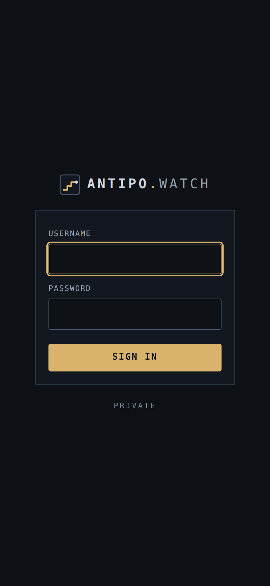
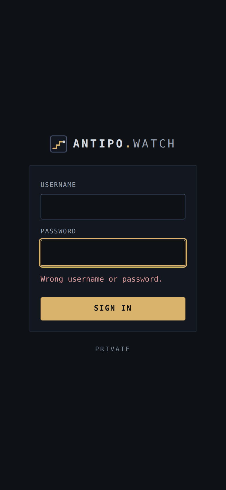

Loop 013 — A private portal
2026-11-22 · A clean login page in front of every page; results kept on the server only, uploaded by the daily run and checked before they are stored. The code stays public. Version 0.16.0.
Why
The repo, we can leave it public. But the web portal could have a login, a clean login with my style, just a username and a password. Leave the repo clean with the code, and just the results on the web server.
The owner's words, reworded in English.
What changed


- Every page behind the login, on antipo.watch and the Fly.io address; a 30-day session; wrong logins slowed down.
- Results on the server: signals, decisions and real orders are uploaded with a token, checked by the same rules, kept in
/data/results. The repository ignores them. - Secrets typed in hidden prompts on the machine; never in the repository or a log.
Checks
| Check | Result | Evidence |
|---|---|---|
| Unit and browser tests | passed | 196 and 18. |
| From outside, both addresses | passed | Every page answers 303 to the login; an upload without the token, 401. |
| Signing in on the live site from a phone | passed | Scanner and portfolio shown after login. |
| The first daily run with uploads | not run | Monday Nov 23. |